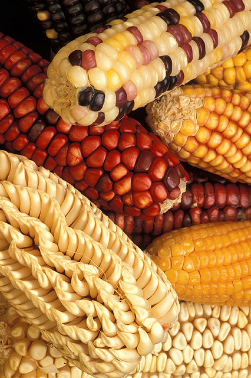
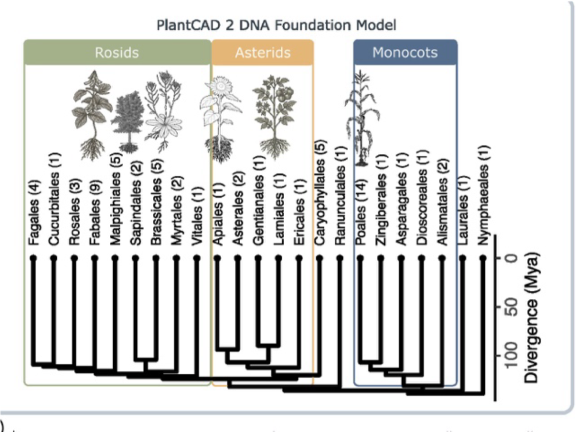
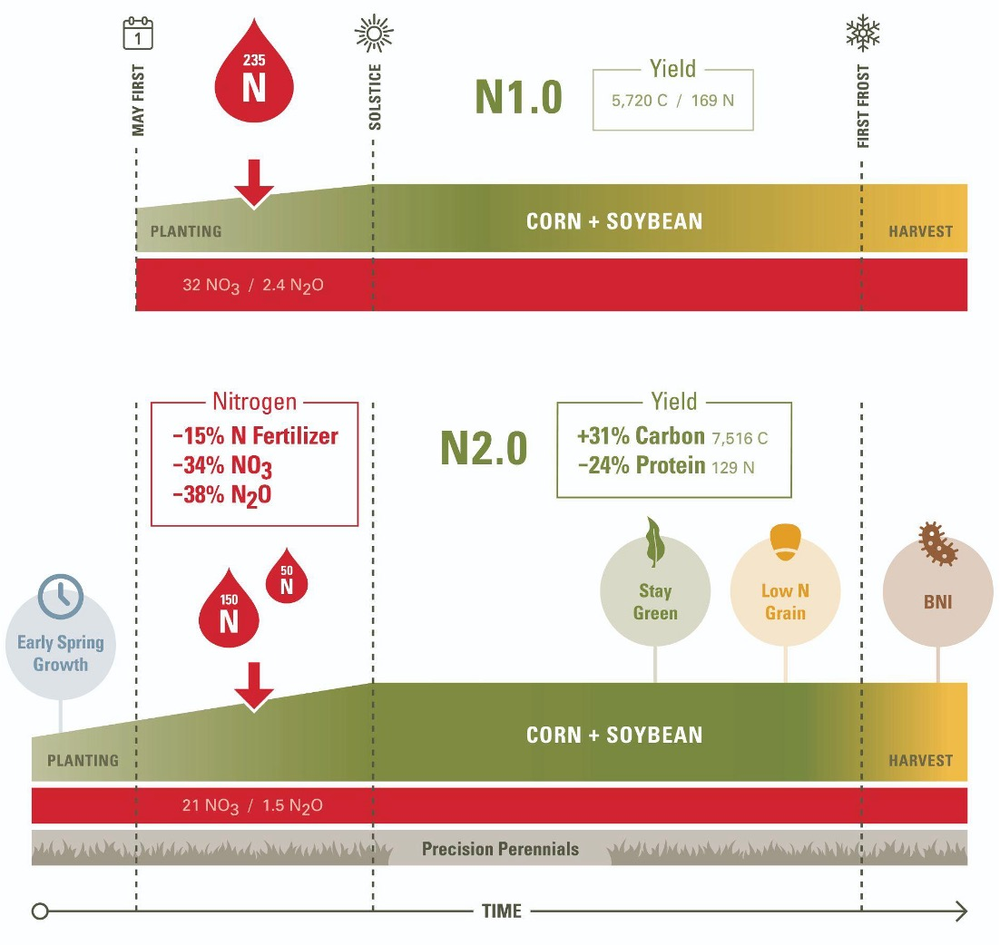
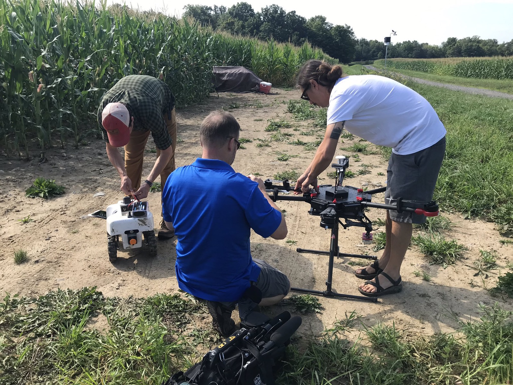
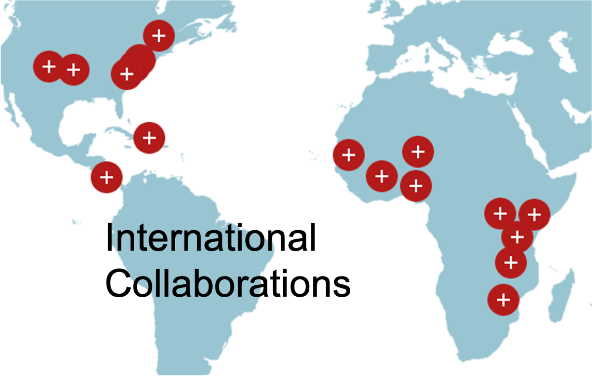

Home / Research
What we doWe read the diversity locked inside wild and cultivated genomes and use it to design the sustainable crops agriculture will need. Below: what we're working on right now — then the research lines that got us here, running back to 1998.

Maize diversity — the raw material for discoveryThat staggering diversity is where useful variation hides. We map it across thousands of landraces and wild relatives — even across species — using genome–environment association to connect DNA to the climates and conditions plants are adapted to.
Twenty-five years of association mapping, from the NAM population onward, have turned that variation into a map of genotype-to-phenotype that the whole community now builds on.

PlantCAD2 learns across the flowering-plant tree of life — 65 genomes spanning the rosids, asterids, and monocots.PlantCAD2 and GeneCAD treat DNA the way large language models treat text. Trained across 65 angiosperm genomes, PlantCAD2 captures evolutionary conservation and functional signal directly from sequence — outperforming models more than 10× its size on cross-species tasks.
GeneCAD takes the next step: predicting gene structure straight from DNA, removing the need for costly transcriptomic evidence, and generalizing beyond plants to animal genomes.

From N1.0 to N2.0: keeping nitrogen in the field — −15% fertilizer, −38% N₂O, and more carbon captured.Most nitrogen applied to maize never reaches the grain — it runs off into water and air as nitrate and nitrous oxide. Through CERCA / Nitrogen 2.0 we design a nitrogen-efficient, cold-tolerant corn that starts growing earlier, stays green longer, and recycles nitrogen through the season.
The payoff is a crop that cuts fertilizer loss, emissions, and cost while lifting yield — a concrete example of designing for sustainability from the genome up.

High-throughput field phenotyping feeds the modelsDiscovery only matters if others can build on it. The Practical Haplotype Graph, TASSEL, GAPIT, and our imputation tools put high-tech breeding within reach of programs everywhere — from Cornell to sub-Saharan Africa through partnerships like Breeding Insight and the ILCI network.
Open data, open code, open germplasm: the tools we release are used on more than 2,000 species worldwide.
A dozen long-running ideas — each one enough to support a generation of scientists. Hover a milestone to see the paper or tool that marked it.
Our open bioinformatics is used by breeding programs and research groups on every inhabited continent.
